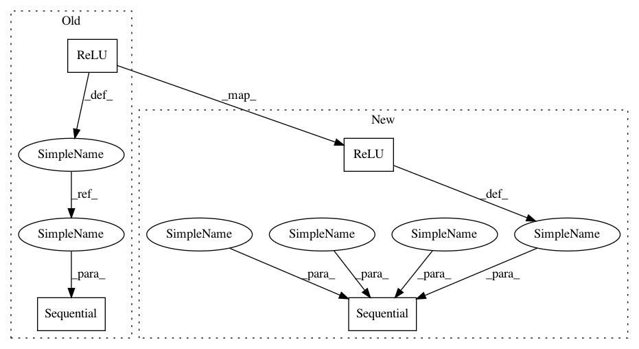

ce0e5b587e7993a377029272d0e27ca970772172,implementations/cyclegan/models.py,ResidualBlock,__init__,#ResidualBlock#,19
Before Change
def __init__(self, in_features):
super(ResidualBlock, self).__init__()
conv_block = [ nn.ReflectionPad2d(1),
nn.Conv2d(in_features, in_features, 3),
nn.InstanceNorm2d(in_features),
nn.ReLU(inplace=True),
nn.ReflectionPad2d(1),
nn.Conv2d(in_features, in_features, 3),
nn.InstanceNorm2d(in_features) ]
self.conv_block = nn.Sequential(*conv_block)
def forward(self, x):
return x + self.conv_block(x)
After Change
def __init__(self, in_features):
super(ResidualBlock, self).__init__()
self.block = nn.Sequential(
nn.ReflectionPad2d(1),
nn.Conv2d(in_features, in_features, 3),
nn.InstanceNorm2d(in_features),
nn.ReLU(inplace=True),
nn.ReflectionPad2d(1),
nn.Conv2d(in_features, in_features, 3),
nn.InstanceNorm2d(in_features),
)
def forward(self, x):
return x + self.block(x)
In pattern: SUPERPATTERN
Frequency: 3
Non-data size: 4
Instances
Project Name: eriklindernoren/PyTorch-GAN
Commit Name: ce0e5b587e7993a377029272d0e27ca970772172
Time: 2019-03-31
Author: eriklindernoren@live.se
File Name: implementations/cyclegan/models.py
Class Name: ResidualBlock
Method Name: __init__
Project Name: eriklindernoren/PyTorch-GAN
Commit Name: 318c3310a684e096ed2c6aa2e244dd22268ba471
Time: 2019-03-31
Author: eriklindernoren@live.se
File Name: implementations/munit/models.py
Class Name: ResidualBlock
Method Name: __init__
Project Name: eriklindernoren/PyTorch-GAN
Commit Name: ce0e5b587e7993a377029272d0e27ca970772172
Time: 2019-03-31
Author: eriklindernoren@live.se
File Name: implementations/cyclegan/models.py
Class Name: ResidualBlock
Method Name: __init__
Project Name: daavoo/pyntcloud
Commit Name: 16463f1594953774f1bfcac86d11e70c28d6c0c2
Time: 2017-05-08
Author: daviddelaiglesiacastro@gmail.com
File Name: pyntcloud/learn/models/voxnet.py
Class Name: VoxNet
Method Name: __init__